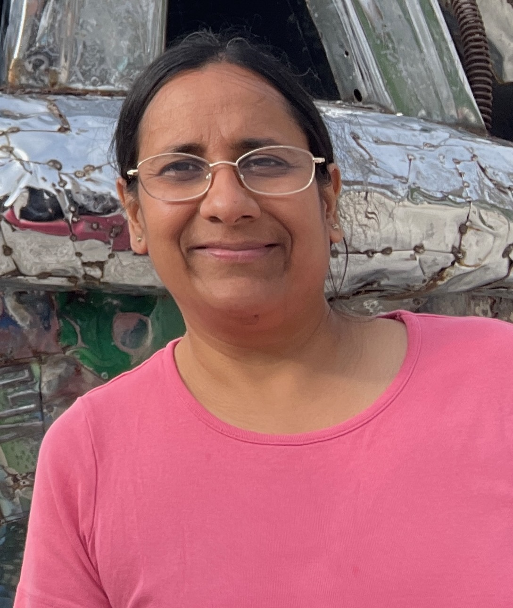

I am trained a computer scientist, and my research is at the intersection of Computer Science and Operations Research. Economics is not necessarily my strength, but I do have to deal with econometric modelling at times. I often find these models complex and lacking intuition -- to the point where they seem more like tools to plug in some numbers, rather than to understand why they work and, more importantly, where they come from.
So when I chanced upon a memoir by Amartya Sen, Home in the World, at a local public library, I decided to read it to see what he had to say about such things and why they mattered so much. After all, he was from the same part of the world I am from -- West Bengal, India, and places he grew up in -- Santiniketan, Calcutta (Presidency College) were places I am familiar with. So I assumed there must be some commonality in thinking that can offer some respite from this enigma.
In describing his early education in Dhaka and later Shantiniketan, he nonchalantly mentions the need for creativity in learning as a clear distinction from competitive excellence. I found this very agreeable, having encountered similar situations in my own academic journey countless times.
"The emphasis at the Santiniketan School on fostering curiosity rather than competitive excellence; indeed, interest in grades and examination performance was severely discouraged. I greatly enjoyed exploring Santiniketan's open-shelved and welcoming library with stacks of books about places all around the world, and I absolutely loved not having to perform well", he says.
Well, that is bound to be a relief. However, that does not imply being unproductive. On the contrary, the ability to study and learn on one's own, topics relevant to research, has a huge impact on building confidence, reasoning, and overall performance.
He has a seamless ability to train both the left and right brain with appropriate material. Not only were mathematics and economics subjects that were studied in great detail, but he also took great pleasure in studying thoroughly Sanskrit grammar (mainly from his grandfather Acharya Kshiti Mohan Sen), feminist issues (Nadi O Nari), Buddhism (Faxian's A Record of Buddhistic Kingdoms), Bengali literature (Caryapad, Mangal Kavya), and a lot more. In short, he is a voracious reader. I have always felt that feeding both the left and right brains is essential to survive -- ever so often in chasing dreams in the corporate world, we explore technical problems in great detail, but somehow feel the need to be not so transparent about our hobbies (such as art, music, literature, etc) and in worst cases eliminate them from our existence. It is very important to cultivate these interests -- not only because it inspires thinking, but also because it teaches rigor and inculcates out-of-the-box thinking.
And you might ask, "So why does all this help with econometric modelling?"
Well, before you know it, he starts talking about "social choice theory" - a subject he invented and taught in Cambridge, and he recalls --
"In constructive social choice reasoning, the idea of social contracts can have considerable use, for example in assessing the fairness of tax systems, or people's willingness to accept the rationing of food to meet situations of shortage (as in the Second World War) We also examined how a set of contractual obligations, with penalties for violation, compared with reasoned obligations that people accept as their duty without an insistence on reciprocity (shartaheen kartavya) [This was discussed in Chapter 6, following a line of argument advanced by Gautam Buddha in Sutta Nipata and elsewhere".
Oh well. So that is why I didn't find econometric modelling appealing. Not because my admiration of Gautama Buddha is any less -- but because I did not ever try to trace back social choices so far back in history, or even imagined that those texts have such a purposeful impact on modern-day thinking!
Another completely mesmerising aspect of his academic training was his early undergraduate education in Cambridge -- where he had the opportunity to take long afternoon walks with his advisor, Italian economist Piero Sraffa. The chapter (Ch. 22) on Dobb, Sraffa, and Robertson is a revelation on how research collaborations happen --
"As a young lecturer, I was thrilled to be teaching in Trinity in collaboration with Dennis Robertson, Maurice Dobb and Piero Sraffa. ... -- they were my teachers -- but it was when I became their colleague that I really got to know them well."
Of Piero Sraffa, he says, "As well as his tremendous contribution to both economics and philosophy, Sraffa together with Maurice Dobb, was responsible for an important contribution to editorial work -- the definitive edition of the collected works of David Ricardo, eleven volumes of which started to appear in 1951 and which were already much discussed when I arrived in Cambridge in 1953. The last volume, the 'General Index', came out in 1973. The index itself, which is extraordinarily detailed and annotated, took Piero and Maurice one year to produce. I remember Kenneth Arrow telling me of his frustration when he tried to see Piero on a visit to Cambridge and was told that he was not seeing anyone as he was very busy preparing the index to Ricardo. Arrow asked me, 'Aren't you amazed? Isn't an index something you do on a rainy Sunday when you don't have to go anywhere?' I tried to defend Piero by explaining that it was not that kind of an index, but I don't think Ken was at all convinced.
....Sraffa's book has a subtitle, "Prelude to a critique of economic theory". Clearly, there may have been some expectation on his part that it would lead to a fuller critique of mainstream economic theory. But I do not believe Piero was seriously planning to produce such a critique. He was certainly interested in how others would extend what he had already done. I was privileged to read the manuscript of the book, well before it was published -- in fact, Maurice Dobb and I read it as it was being written. I was allowed to do this only in his rooms in Trinity after dinner, while Piero (wearing green eyeshades to protect his vision from overhead lights) would read Le Monde or Corriere della Sera. Whenever I took my eyes away from his text, he would immediately ask me, 'Why did you pause? Are you worried about something I said?' It was both an exciting and an exacting experience for me -- harrowing and thrilling at the same time."
The dedication of both the advisor and the student speaks volumes about the quality of the work produced. Ever so often, we are in a hurry to get something published, without that exacting experience -- and students often wonder why they are being subjected to such thoroughness. A lesson in itself.
The lessons Amartya Sen enjoyed with Piero Sraffa were also steeped in humility. "Sraffa's economic ideas greatly interested me, but I was even more captivated by his philosophical ideas. .... Was Sraffa thrilled by the impact that his ideas had on, arguably, the leading philosopher of our times? When I asked him that question more than once in our regular afternoon walks, he said, No, he was not. When pressed, he explained that the point he was making was 'rather obvious'."
Yet throughout the book, he puts forward various arguments on how there were steep intellectual battles amongst the various camps of economic theory at Cambridge. "Driving nails into coffins" of ideas was well in practice, but one had to navigate around such detrimental ideologies.
About my econometric modelling rant -- I had no clue that such models were even suffused with political thinking - Marxism, Fascism, and others. At one point, Sen describes Sraffa's admiration of Gramsci and a lot more about Marxist theories that are perhaps worth thinking about!
Finally, being named by Rabindranath Tagore himself was not the only reason Amartya Sen came back to Santiniketan from Dhaka. "There was also Nandalal Bose, one of India's leading painters and an outstanding teacher of the fine arts, under whose direction and leadership Santiniketan developed its justly famous school of fine arts, Kala Bhavana, where a number of talented artists (such as Benodbihari Mukhopadhay and Ramkinkar Baij) flourished. It was here that Satyajit Ray received some of the teaching that transformed his ideas and art. He would later comment: 'I do not think my Pather Panchali would have been possible if I had not done my years of apprenticeship in Santiniketan. It was there, sitting at the feet of "Mater Moshai" [Nandalal Bose], that I learned how to look at nature and how to feel the rhythms inherent in nature.
Sadly, the memoir is rather abrupt in its introduction and discussion of Nabaneeta Deb Sen, the winning of the Nobel Prize, or even discussions of the plethora of work in economics that he has done since those early Cambridge days. However, the formative years are very well described and leave a mark on a keen academic reader.
I am afraid I find the reviews of the book in some published news magazines and journals lacking in appreciation of the academic rigor that is described in the book. While the author may have been in a mood for contemplation, one cannot help but realise that the world of academics is as gratifying as it is rigorous. It would certainly be a great read for someone contemplating a PhD or in the course of their academic career.
And yes, econometric modelling still requires a lot of "soul searching".
Haimonti is trained as a computer scientist, but loves to read, paint, and write in her spare time.